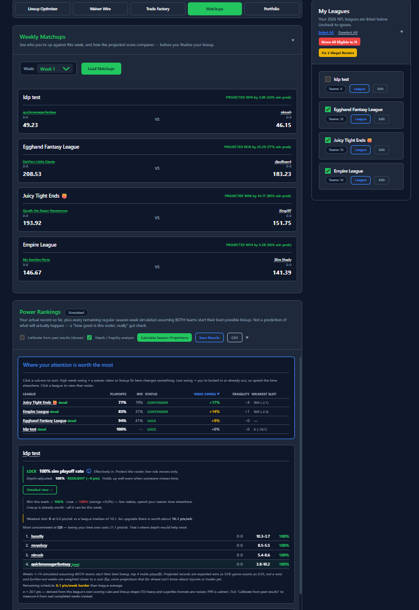
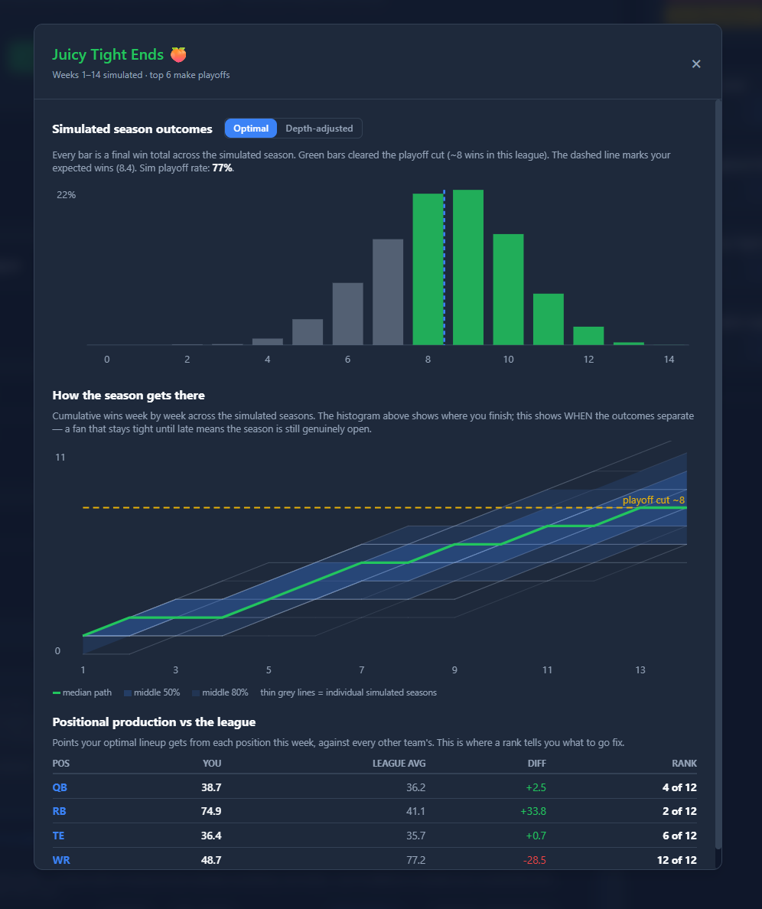
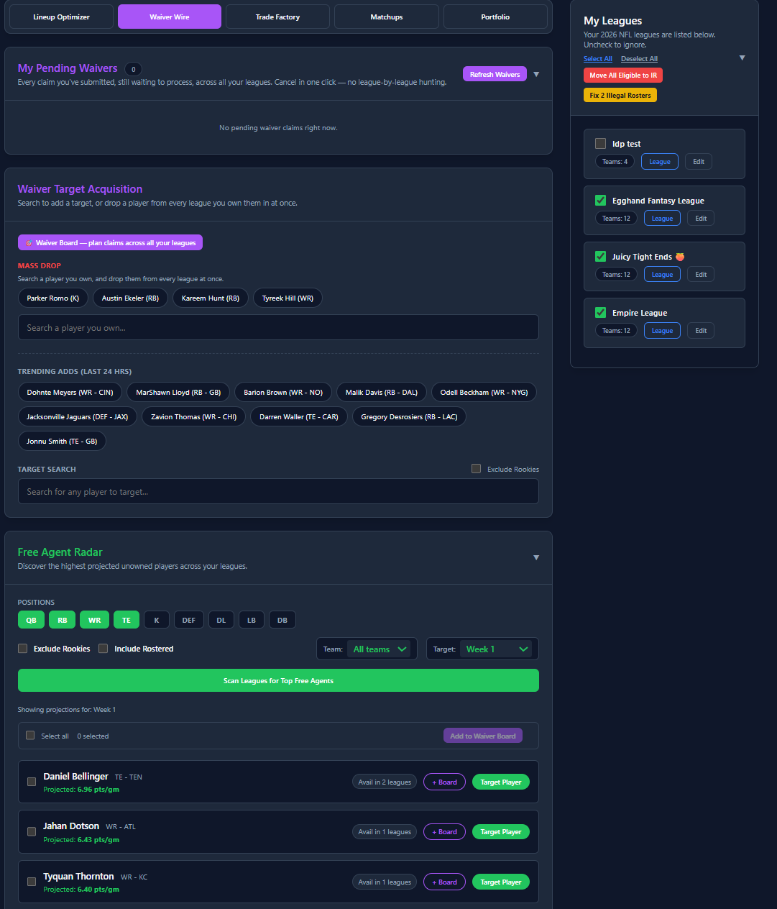

Grouped by where you'll find it in the extension, so you can look something up rather than read the whole list.
Set the best available starters in every league you manage, in one pass.
Sets optimal starters across every league you've opted in, using Sleeper's own weekly projections and each league's exact scoring settings.
Reads each league's scoring rules individually, so a TE-premium league and a standard league get different answers for the same player.
Run it for the current week or set lineups ahead of time for a future one.
Keeps taxi players out of consideration so a stashed rookie never lands in your starting lineup.
Keeps your optimal lineup but pushes latest-kickoff players into FLEX spots, so you can still pivot as earlier games finish.
Open any team to move players between your starters, bench, IR and taxi squad without leaving the extension.
This week's matchup for every league at once, plus a full season simulation to see which leagues are still genuinely in play.


See who you're up against and how the projected score compares, in every league at once, before you finalize a lineup.
Shown alongside the projected margin for every matchup — always your own chance to win, never flipped based on who's favored.
Simulates every remaining week thousands of times to produce real playoff odds, not just a single projected record.
An optional second simulation that accounts for availability risk across your whole roster, toggled against the standard optimal-lineup model.
Every league ranked by how much this week's result actually swings your season — sortable by playoff odds, week-swing, fragility, or weakest slot.
Cumulative wins week by week across every simulated season, condensed into percentile bands with the median path and the real playoff cut line drawn in.
Ranks your optimal lineup's output at every position against the rest of the league, so you know exactly what to go fix.
Flags your single weakest starting slot against the league median, and how many points of playoff odds you're exposed to from an injury.
Full standings for any league — real record, points for/against, and a "lucky" / "unlucky" flag from comparing scoring rank to win rank. Every team is clickable straight to their roster and draft picks.
Picks resolve to a real slot ("1.05, 5th overall") computed from the actual draft order, handling snake, linear, and 3rd-round-reversal leagues correctly.
Every player you own across every league, in one list — exposure percentage, which of those leagues are still live, and age context without ever forecasting decline.
Save a full Power Rankings run as a self-contained page you can reopen or print, or export the summary table to a CSV for a spreadsheet.
Look up another manager's roster and situation read-only — anything that would let you act on their behalf is automatically disabled while you're viewing someone else's team.
Find who's available across every league, then claim them without going league by league.

Searches every league you manage at once and shows where a player is actually available.
Surfaces the highest-projected unowned players across all your leagues. Filter by position (offense and IDP alike) or a specific NFL team, and optionally include already-rostered players to scout trade targets instead of just the waiver wire.
Shows who the wider Sleeper community is picking up right now.
Queue claims in multiple leagues and send them all at once.
Set a flat bid across leagues or tune each one individually, with your remaining budget shown per league.
Set a ceiling on what an entire board of claims could cost in one league, across every claim at once — catches a cap that's accidentally lower than your own top single bid before you submit anything.
Detects whether a league uses FAAB, rolling priority, or reverse standings and submits the correct kind of claim automatically.
Change the bid on a claim you've already submitted, without cancelling and re-entering it.
Reorder competing claims in a league by dragging, the same way you would in Sleeper. Bids and priority are kept consistent, so a smaller bid can't be ranked ahead of a bigger one.
Checks whether a claim would be rejected for a full roster and offers to open a spot first, instead of letting it fail after the fact.
If your roster changes after you submit, it flags any pending claim that would now fail and offers to fix it.
Add the players you want this week to one target list, and see instantly which of your leagues each one is actually available in. QuickManager builds a claim per target automatically using your own bench, but never decides for you — change the drop from a dropdown, or click "try another drop" to add your own fallback attempt on the same claim.
An optional tool for the Waiver Board: drag your targets against your own bench, best to worst, and QuickManager works out the full sequence of claims for you — which drop unlocks which add, and in what order to submit them.
Set the most you'd pay for a player once, as a percentage of budget. QuickManager fills in the dollar amount correctly in every league that player is a target, accounting for what's already committed to other claims in the same league.
Your pending claims for a league now show up right on the Waiver Board — edit the bid, change who gets dropped (including switching to an open roster spot if one's freed up since you submitted it), or cancel. A true total exposure number shows what's already pending plus what you're about to add.
Waiver Board rankings now use a player's average projected value across the season, not just this week's number — so a normally-good starter who's banged up for a single week doesn't get unfairly buried at the bottom of a comparison.
Drop a player from every league you own them in, in one action — handy the moment a flier you added everywhere stops being worth the roster spot.
Flags anyone already on your rosters who's no longer on an NFL roster at all, right next to Mass Drop.
Build an offer once, find everyone who can take it, and manage what's pending.
Describe the trade you want and it searches every league for managers who can actually make it work.
Send the same offer to every valid partner at once.
Include draft picks on either side, with picks acquired from another team labelled by their original owner.
Every open offer across every league, incoming and outgoing, with accept, decline and withdraw in one click.
Reshape a trade someone sent you and send it back, without declining and rebuilding from scratch.
Change an offer you've already made instead of withdrawing it and starting over.
Add or remove players and picks on either half of the trade, including asking for something new from their roster.
Optionally attach a Sleeper direct message to every trade you send, so the other manager actually notices it. Works for single and bulk sends.
Catch the roster problems that quietly cost you points or get your team flagged.
Works out who can go on IR under that league's own settings rather than a generic rule — starting or benched — and only offers moves Sleeper will accept.
Respects each league's experience limit, taxi deadline and non-rookie rules — including the ones Sleeper's own API doesn't enforce.
Scans every league for players who qualify for IR right now and clears the space in one pass. Shows you exactly who it wants to move first.
Spots rosters breaking their league's rules — a healed player still on IR, someone who aged out of the taxi squad, or simply too many players — and fixes what it can without cutting anyone.
Puts eligible players back into open IR and taxi slots first. If cuts are genuinely unavoidable it says so, and leaves the choice to you.
Cut someone from any roster directly, with confirmation — or use Mass Drop to cut them from every league you own them in at once.
Connecting and switching accounts.
Log into Sleeper as normal and the extension picks up your session and confirms it's really yours — nothing to copy, paste, or double-check. On iPhone and iPad, where Orion is the only browser that supports extensions like this, a manual token-paste option is there as a fallback.
Opt any league in or out; every tool respects that choice.
QuickManager works with your own Sleeper login and only ever acts on leagues you've opted in. It's an independent tool — not affiliated with, endorsed by, or sponsored by Sleeper. Questions or a feature you'd like to see? Email us.